lucene数据存储 #
shard是Elasticsearch数据存储的最小单位，index的存储容量为所有shard的存储容量之和。Elasticsearch集群的存储容量则为所有index存储容量之和。
一个shard就对应了一个lucene的library。对于一个shard，Elasticsearch增加了translog的功能，类似于HBase WAL，是数据写入过程中的中间数据，其余的数据都在lucene库中管理的。
所以Elasticsearch索引使用的存储内容主要取决于lucene中的数据存储。
 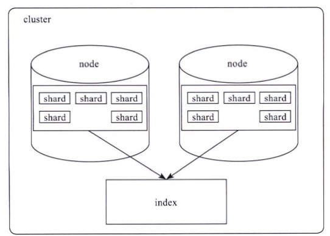
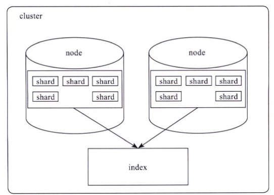
lucene基本概念 #
-
segment : lucene内部的数据是由一个个segment组成的，写入lucene的数据并不直接落盘，而是先写在内存中，经过了refresh间隔，lucene才将该时间段写入的全部数据refresh成一个segment，segment多了之后会进行merge成更大的segment。lucene查询时会遍历每个segment完成。由于lucene* 写入的数据是在内存中完成，所以写入效率非常高。但是也存在丢失数据的风险，所以Elasticsearch基于此现象实现了translog，只有在segment数据落盘后，Elasticsearch才会删除对应的translog。
-
doc : doc表示lucene中的一条记录
-
field ：field表示记录中的字段概念，一个doc由若干个field组成。
-
term ：term是lucene中索引的最小单位，某个field对应的内容如果是全文检索类型，会将内容进行分词，分词的结果就是由term组成的。如果是不分词的字段，那么该字段的内容就是一个term。
-
倒排索引（inverted index）: lucene索引的通用叫法，即实现了term到doc list的映射。
-
正排数据：搜索引擎的通用叫法，即原始数据，可以理解为一个doc list。
-
docvalues :Elasticsearch中的列式存储的名称，Elasticsearch除了存储原始存储、倒排索引，还存储了一份docvalues，用作分析和排序。
lucene文件内容 #
lucene包的文件是由很多segment文件组成的，segments_xxx文件记录了lucene包下面的segment文件数量。每个segment会包含如下的文件。
| Name | Extension | Brief Description |
|---|---|---|
| Segment Info | .si | segment的元数据文件 |
| Compound File | .cfs, .cfe | 一个segment包含了如下表的各个文件，为减少打开文件的数量，在segment小的时候，segment的所有文件内容都保存在cfs文件中，cfe文件保存了lucene各文件在cfs文件的位置信息 |
| Fields | .fnm | 保存了fields的相关信息 |
| Field Index | .fdx | 正排存储文件的元数据信息 |
| Field Data | .fdt | 存储了正排存储数据，写入的原文存储在这 |
| Term Dictionary | .tim | 倒排索引的元数据信息 |
| Term Index | .tip | 倒排索引文件，存储了所有的倒排索引数据 |
| Frequencies | .doc | 保存了每个term的doc id列表和term在doc中的词频 |
| Positions | .pos | Stores position information about where a term occurs in the index |
| 全文索引的字段，会有该文件，保存了term在doc中的位置 | ||
| Payloads | .pay | Stores additional per-position metadata information such as character offsets and user payloads |
| 全文索引的字段，使用了一些像payloads的高级特性会有该文件，保存了term在doc中的一些高级特性 | ||
| Norms | .nvd, .nvm | 文件保存索引字段加权数据 |
| Per-Document Values | .dvd, .dvm | lucene的docvalues文件，即数据的列式存储，用作聚合和排序 |
| Term Vector Data | .tvx, .tvd, .tvf | Stores offset into the document data file |
| 保存索引字段的矢量信息，用在对term进行高亮，计算文本相关性中使用 | ||
| Live Documents | .liv | 记录了segment中删除的doc |
lucene各文件具体内容和实现 #
lucene数据元信息文件 #
文件名为：segments_xxx
该文件为lucene数据文件的元信息文件，记录所有segment的元数据信息。
该文件主要记录了目前有多少segment，每个segment有一些基本信息，更新这些信息定位到每个segment的元信息文件。
lucene元信息文件还支持记录userData，Elasticsearch可以在此记录translog的一些相关信息。
- 文件示例
 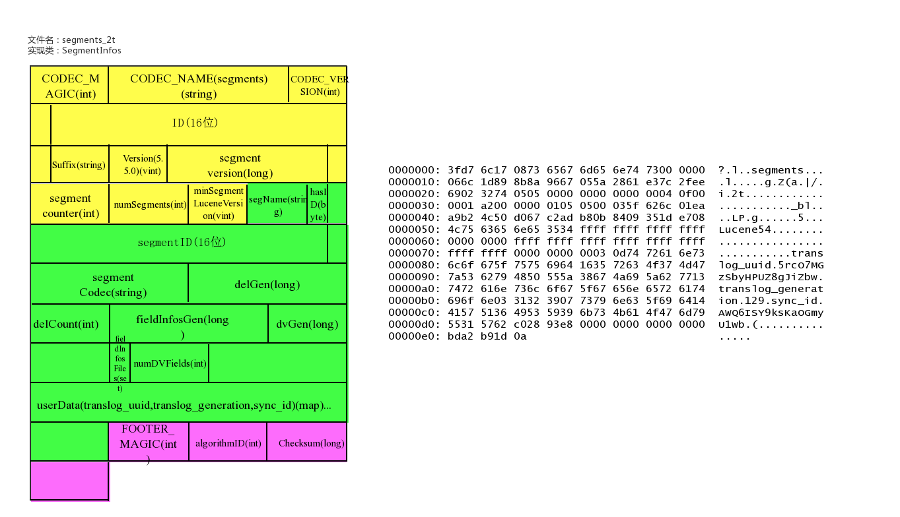
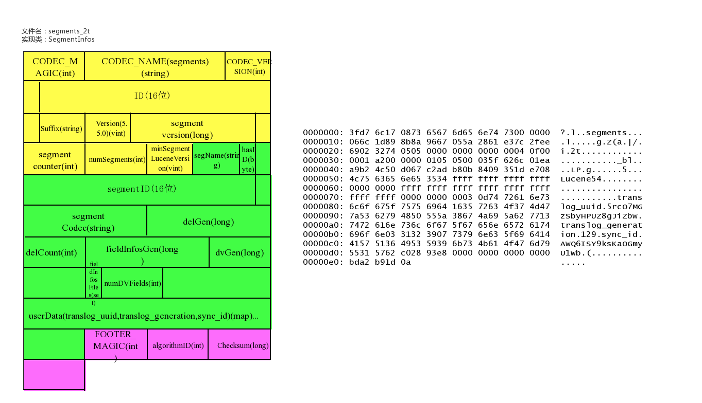
- 具体实现类
public final class SegmentInfos implements Cloneable, Iterable<SegmentCommitInfo> {
// generation是segment的版本的概念，从文件名中提取出来，实例中为：2t/101
private long generation; // generation of the "segments_N" for the next commit
private long lastGeneration; // generation of the "segments_N" file we last successfully read
// or wrote; this is normally the same as generation except if
// there was an IOException that had interrupted a commit
/** Id for this commit; only written starting with Lucene 5.0 */
private byte[] id;
/** Which Lucene version wrote this commit, or null if this commit is pre-5.3. */
private Version luceneVersion;
/** Counts how often the index has been changed. */
public long version;
/** Used to name new segments. */
// TODO: should this be a long ...?
public int counter;
/** Version of the oldest segment in the index, or null if there are no segments. */
private Version minSegmentLuceneVersion;
private List<SegmentCommitInfo> segments = new ArrayList<>();
/** Opaque Map<String, String> that user can specify during IndexWriter.commit */
public Map<String,String> userData = Collections.emptyMap();
}
/** Embeds a [read-only] SegmentInfo and adds per-commit
* fields.
*
* @lucene.experimental */
public class SegmentCommitInfo {
/** The {@link SegmentInfo} that we wrap. */
public final SegmentInfo info;
// How many deleted docs in the segment:
private int delCount;
// Generation number of the live docs file (-1 if there
// are no deletes yet):
private long delGen;
// Normally 1+delGen, unless an exception was hit on last
// attempt to write:
private long nextWriteDelGen;
// Generation number of the FieldInfos (-1 if there are no updates)
private long fieldInfosGen;
// Normally 1+fieldInfosGen, unless an exception was hit on last attempt to
// write
private long nextWriteFieldInfosGen; //fieldInfosGen == -1 ? 1 : fieldInfosGen + 1;
// Generation number of the DocValues (-1 if there are no updates)
private long docValuesGen;
// Normally 1+dvGen, unless an exception was hit on last attempt to
// write
private long nextWriteDocValuesGen; //docValuesGen == -1 ? 1 : docValuesGen + 1;
// TODO should we add .files() to FieldInfosFormat, like we have on
// LiveDocsFormat?
// track the fieldInfos update files
private final Set<String> fieldInfosFiles = new HashSet<>();
// Track the per-field DocValues update files
private final Map<Integer,Set<String>> dvUpdatesFiles = new HashMap<>();
// Track the per-generation updates files
@Deprecated
private final Map<Long,Set<String>> genUpdatesFiles = new HashMap<>();
private volatile long sizeInBytes = -1;
}
segment的元信息文件 #
文件后缀：.si
每个segment都有一个.si文件，记录了该segment的元信息。
segment元信息文件中记录了segment的文档数量，segment对应的文件列表等信息。
- 文件示例
 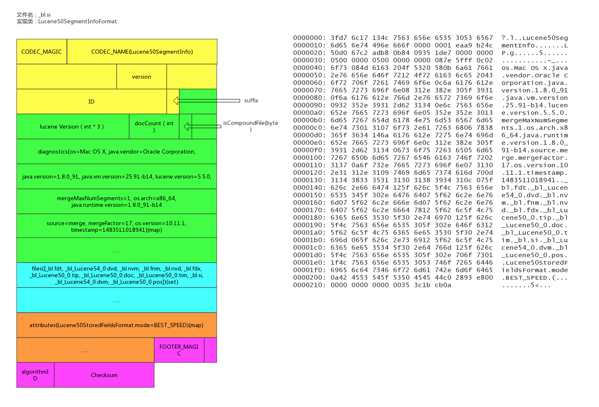
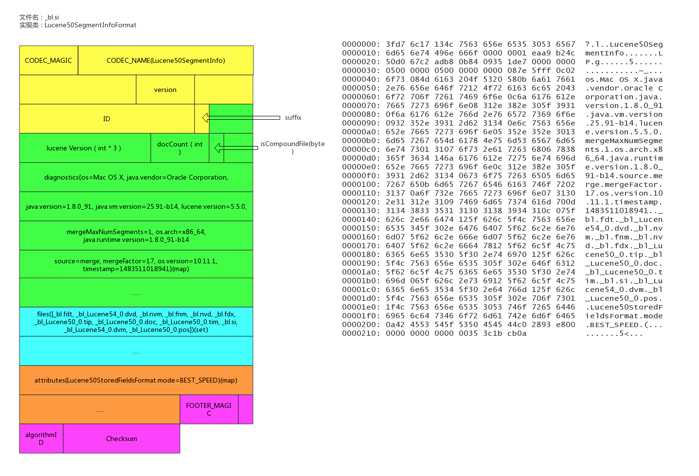
- 具体实现类
/**
* Information about a segment such as its name, directory, and files related
* to the segment.
*
* @lucene.experimental
*/
public final class SegmentInfo {
// _bl
public final String name;
/** Where this segment resides. */
public final Directory dir;
/** Id that uniquely identifies this segment. */
private final byte[] id;
private Codec codec;
// Tracks the Lucene version this segment was created with, since 3.1. Null
// indicates an older than 3.0 index, and it's used to detect a too old index.
// The format expected is "x.y" - "2.x" for pre-3.0 indexes (or null), and
// specific versions afterwards ("3.0.0", "3.1.0" etc.).
// see o.a.l.util.Version.
private Version version;
private int maxDoc; // number of docs in seg
private boolean isCompoundFile;
private Map<String,String> diagnostics;
private Set<String> setFiles;
private final Map<String,String> attributes;
}
fields信息文件 #
文件后缀：.fnm
该文件存储了fields的基本信息。
fields信息中包括field的数量，field的类型，以及IndexOpetions，包括是否存储、是否索引，是否分词，是否需要列存等等。
- 文件示例
 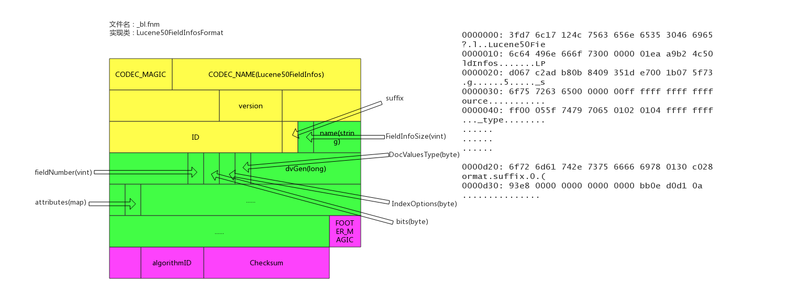
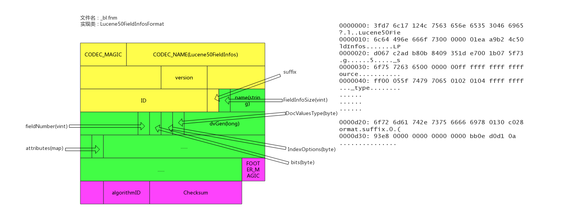
- 具体实现类
/**
* Access to the Field Info file that describes document fields and whether or
* not they are indexed. Each segment has a separate Field Info file. Objects
* of this class are thread-safe for multiple readers, but only one thread can
* be adding documents at a time, with no other reader or writer threads
* accessing this object.
**/
public final class FieldInfo {
/** Field's name */
public final String name;
/** Internal field number */
//field在内部的编号
public final int number;
//field docvalues的类型
private DocValuesType docValuesType = DocValuesType.NONE;
// True if any document indexed term vectors
private boolean storeTermVector;
private boolean omitNorms; // omit norms associated with indexed fields
//index的配置项
private IndexOptions indexOptions = IndexOptions.NONE;
private boolean storePayloads; // whether this field stores payloads together with term positions
private final Map<String,String> attributes;
// docvalues的generation
private long dvGen;
}
数据存储文件 #
文件后缀：.fdx, .fdt
索引文件为.fdx，数据文件为.fdt，数据存储文件功能为根据自动的文档id，得到文档的内容，搜索引擎的术语习惯称之为正排数据，即doc_id -> content，es的_source数据就存在这
索引文件记录了快速定位文档数据的索引信息，数据文件记录了所有文档id的具体内容。
- 文件示例
 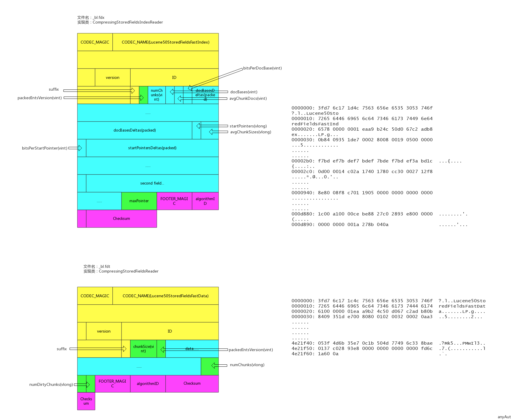
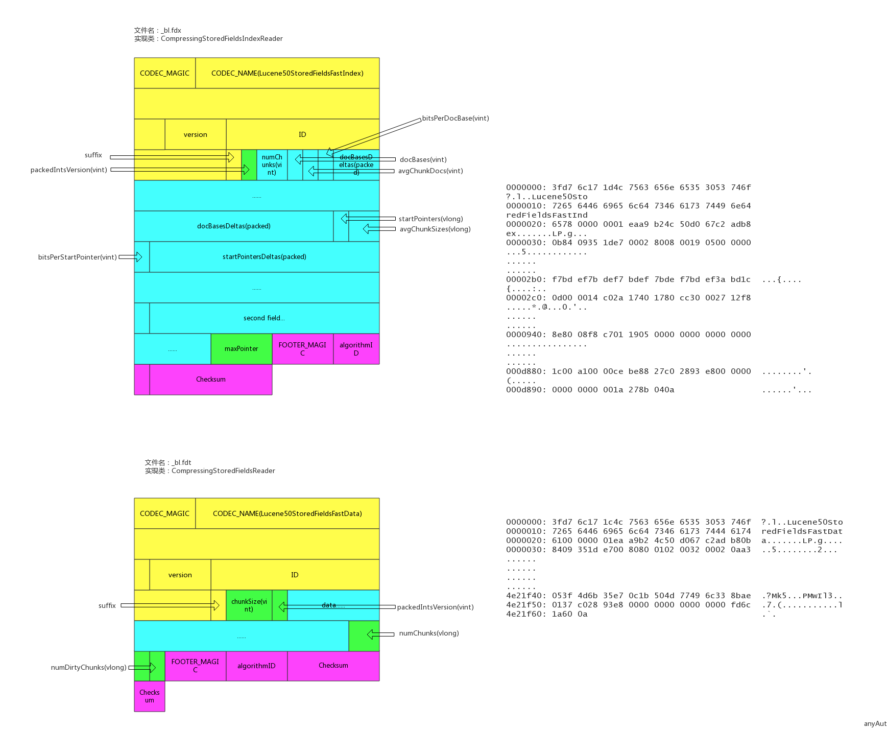
- 具体实现类
/**
* Random-access reader for {@link CompressingStoredFieldsIndexWriter}.
* @lucene.internal
*/
public final class CompressingStoredFieldsIndexReader implements Cloneable, Accountable {
private static final long BASE_RAM_BYTES_USED = RamUsageEstimator.shallowSizeOfInstance(CompressingStoredFieldsIndexReader.class);
final int maxDoc;
//docid索引，快速定位某个docid的数组坐标
final int[] docBases;
//快速定位某个docid所在的文件offset的startPointer
final long[] startPointers;
//平均一个chunk的文档数
final int[] avgChunkDocs;
//平均一个chunk的size
final long[] avgChunkSizes;
final PackedInts.Reader[] docBasesDeltas; // delta from the avg
final PackedInts.Reader[] startPointersDeltas; // delta from the avg
}
/**
* {@link StoredFieldsReader} impl for {@link CompressingStoredFieldsFormat}.
* @lucene.experimental
*/
public final class CompressingStoredFieldsReader extends StoredFieldsReader {
//从fdt正排索引文件中获得
private final int version;
// field的基本信息
private final FieldInfos fieldInfos;
//fdt正排索引文件reader
private final CompressingStoredFieldsIndexReader indexReader;
//从fdt正排索引文件中获得，用于指向fdx数据文件的末端，指向numChunks地址4
private final long maxPointer;
//fdx正排数据文件句柄
private final IndexInput fieldsStream;
//块大小
private final int chunkSize;
private final int packedIntsVersion;
//压缩类型
private final CompressionMode compressionMode;
//解压缩处理对象
private final Decompressor decompressor;
//文档数量，从segment元数据中获得
private final int numDocs;
//是否正在merge，默认为false
private final boolean merging;
//初始化时new了一个BlockState，BlockState记录下当前正排文件读取的状态信息
private final BlockState state;
//chunk的数量
private final long numChunks; // number of compressed blocks written
//dirty chunk的数量
private final long numDirtyChunks; // number of incomplete compressed blocks written
//是否close，默认为false
private boolean closed;
}
倒排索引文件 #
索引后缀：.tip,.tim
倒排索引也包含索引文件和数据文件，.tip为索引文件，.tim为数据文件，索引文件包含了每个字段的索引元信息，数据文件有具体的索引内容。
5.5.0版本的倒排索引实现为FST tree，FST tree的最大优势就是内存空间占用非常低 ，具体可以参看下这篇文章：http://www.cnblogs.com/bonelee/p/6226185.html
http://examples.mikemccandless.com/fst.py?terms=&cmd=Build+it 为FST图实例，可以根据输入的数据构造出FST图
输入到 FST 中的数据为:
String inputValues[] = {"mop","moth","pop","star","stop","top"};
long outputValues[] = {0,1,2,3,4,5};
生成的 FST 图为:
 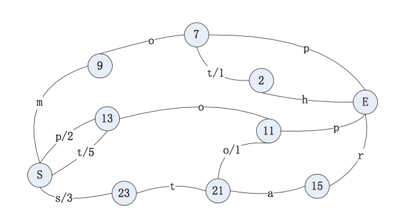
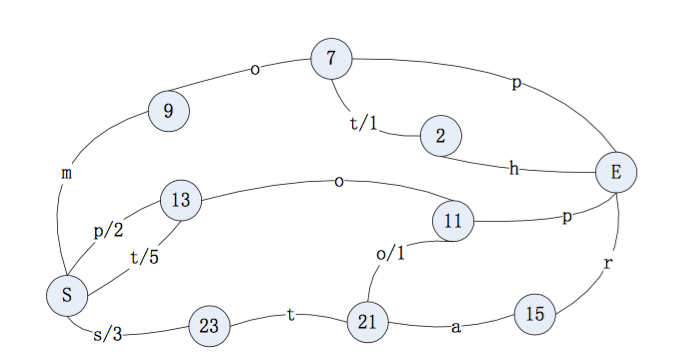
 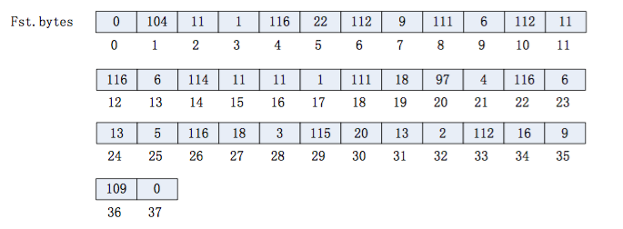
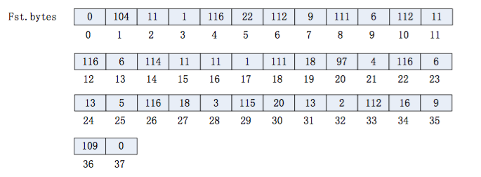
- 文件示例
 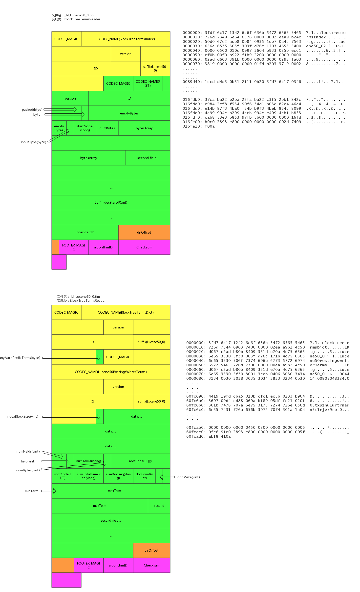
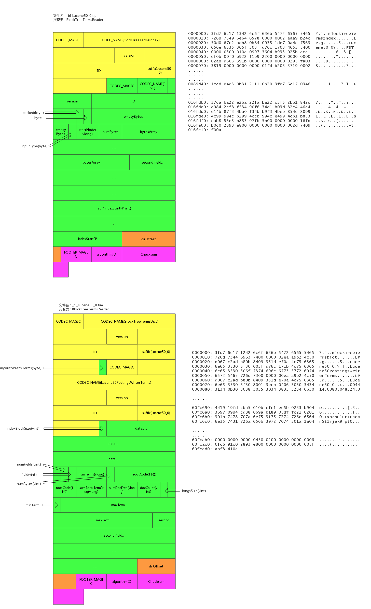
- 图片
倒排链文件 #
文件后缀：.doc, .pos, .pay
.doc保存了每个term的doc id列表和term在doc中的词频
全文索引的字段，会有.pos文件，保存了term在doc中的位置
全文索引的字段，使用了一些像payloads的高级特性才会有.pay文件，保存了term在doc中的一些高级特性
- 文件示例
 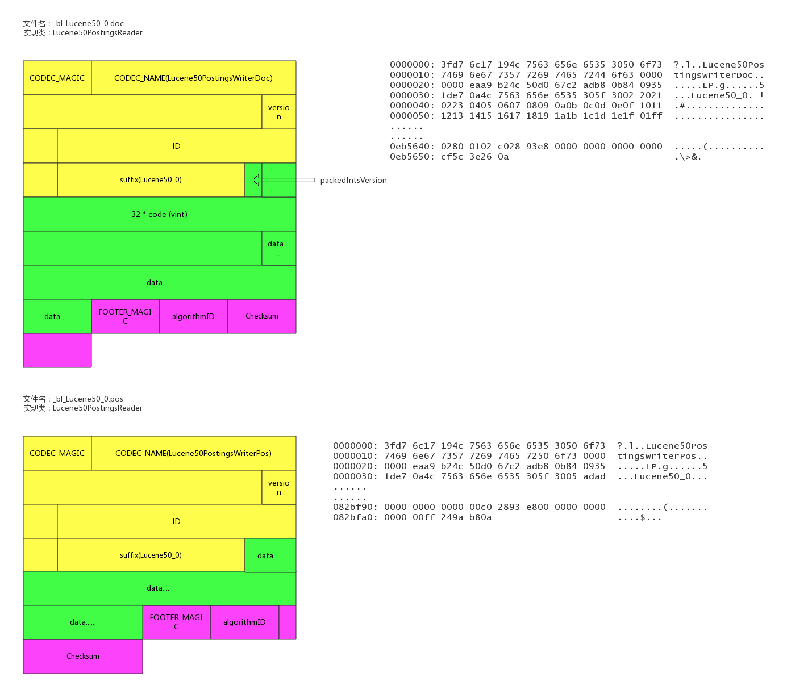
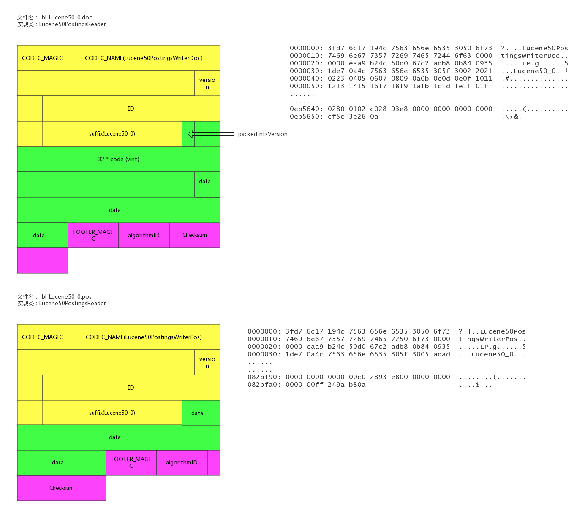
- 具体实现类
/**
* Concrete class that reads docId(maybe frq,pos,offset,payloads) list
* with postings format.
*
* @lucene.experimental
*/
public final class Lucene50PostingsReader extends PostingsReaderBase {
private static final long BASE_RAM_BYTES_USED = RamUsageEstimator.shallowSizeOfInstance(Lucene50PostingsReader.class);
private final IndexInput docIn;
private final IndexInput posIn;
private final IndexInput payIn;
final ForUtil forUtil;
private int version;
//不分词的字段使用的是该对象，基于skiplist实现了倒排链
final class BlockDocsEnum extends PostingsEnum {
}
//全文检索字段使用的是该对象
final class BlockPostingsEnum extends PostingsEnum {
}
//包含高级特性的字段使用的是该对象
final class EverythingEnum extends PostingsEnum {
}
}
列存文件（docvalues） #
文件后缀：.dvm, .dvd
索引文件为.dvm，数据文件为.dvd。
lucene实现的docvalues有如下类型：
1、NONE 不开启docvalue时的状态 2、NUMERIC 单个数值类型的docvalue主要包括（int，long，float，double） 3、BINARY 二进制类型值对应不同的codes最大值可能超过32766字节， 4、SORTED 有序增量字节存储，仅仅存储不同部分的值和偏移量指针，值必须小于等于32766字节 5、SORTED_NUMERIC 存储数值类型的有序数组列表 6、SORTED_SET 可以存储多值域的docvalue值，但返回时，仅仅只能返回多值域的第一个docvalue 7、对应not_anaylized的string字段，使用的是SORTED_SET类型，number的类型是SORTED_NUMERIC类型
其中SORTED_SET 的 SORTED_SINGLE_VALUED类型包括了两类数据 ： binary + numeric， binary是按ord排序的term的列表，numeric是doc到ord的映射。
- 文件示例
 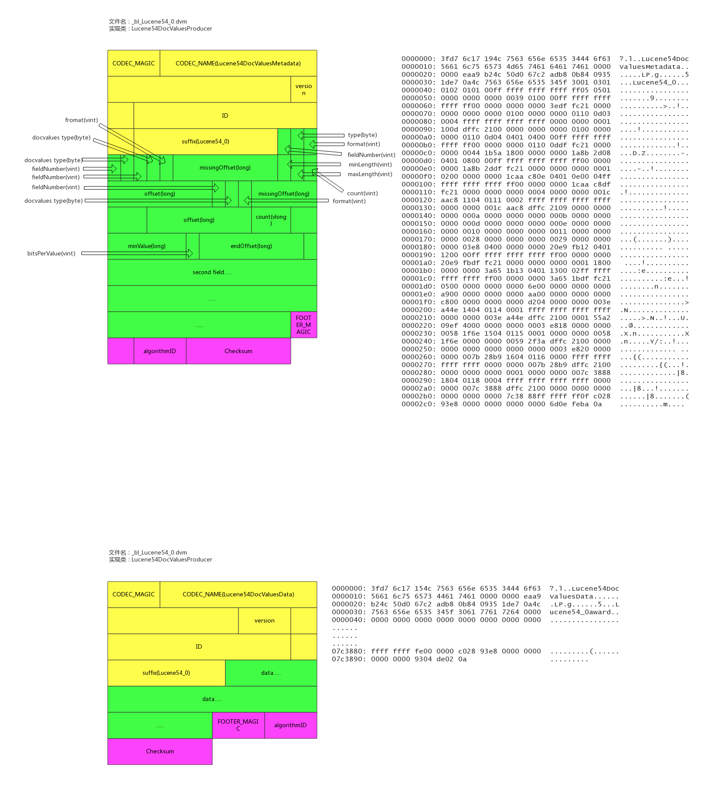
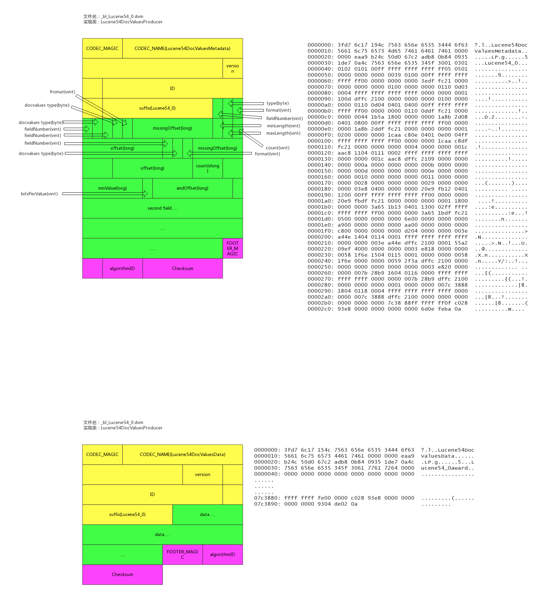
- 具体实现类
/** reader for {@link Lucene54DocValuesFormat} */
final class Lucene54DocValuesProducer extends DocValuesProducer implements Closeable {
//number类型的field的列存列表
private final Map<String,NumericEntry> numerics = new HashMap<>();
//字符串类型的field的列存列表
private final Map<String,BinaryEntry> binaries = new HashMap<>();
//有序字符串类型的field的列存列表
private final Map<String,SortedSetEntry> sortedSets = new HashMap<>();
//有序number类型的field的列存列表
private final Map<String,SortedSetEntry> sortedNumerics = new HashMap<>();
//字符串类型的field的ords列表
private final Map<String,NumericEntry> ords = new HashMap<>();
//docId -> address -> ord 中field的ords列表
private final Map<String,NumericEntry> ordIndexes = new HashMap<>();
//field的数量
private final int numFields;
//内存使用量
private final AtomicLong ramBytesUsed;
//数据源的文件句柄
private final IndexInput data;
//文档数
private final int maxDoc;
// memory-resident structures
private final Map<String,MonotonicBlockPackedReader> addressInstances = new HashMap<>();
private final Map<String,ReverseTermsIndex> reverseIndexInstances = new HashMap<>();
private final Map<String,DirectMonotonicReader.Meta> directAddressesMeta = new HashMap<>();
//是否正在merge
private final boolean merging;
}
/** metadata entry for a numeric docvalues field */
static class NumericEntry {
private NumericEntry() {}
/** offset to the bitset representing docsWithField, or -1 if no documents have missing values */
long missingOffset;
/** offset to the actual numeric values */
//field的在数据文件中的起始地址
public long offset;
/** end offset to the actual numeric values */
//field的在数据文件中的结尾地址
public long endOffset;
/** bits per value used to pack the numeric values */
public int bitsPerValue;
//format类型
int format;
/** count of values written */
public long count;
/** monotonic meta */
public DirectMonotonicReader.Meta monotonicMeta;
//最小的value
long minValue;
//Compressed by computing the GCD
long gcd;
//Compressed by giving IDs to unique values.
long table[];
/** for sparse compression */
long numDocsWithValue;
NumericEntry nonMissingValues;
NumberType numberType;
}
/** metadata entry for a binary docvalues field */
static class BinaryEntry {
private BinaryEntry() {}
/** offset to the bitset representing docsWithField, or -1 if no documents have missing values */
long missingOffset;
/** offset to the actual binary values */
//field的在数据文件中的起始地址
long offset;
int format;
/** count of values written */
public long count;
//最短字符串的长度
int minLength;
//最长字符串的长度
int maxLength;
/** offset to the addressing data that maps a value to its slice of the byte[] */
public long addressesOffset, addressesEndOffset;
/** meta data for addresses */
public DirectMonotonicReader.Meta addressesMeta;
/** offset to the reverse index */
public long reverseIndexOffset;
/** packed ints version used to encode addressing information */
public int packedIntsVersion;
/** packed ints blocksize */
public int blockSize;
}